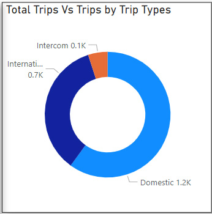

TRIP ANALYSIS
We have the data of a company which ships things from one place to another. They have domestic as well as international and intercom shipping.
The data is seperated into different sections with respect to TripID.
In this analysis report we see stats about Total Miles travelled, Revenus, Total Cost etc.
1. Total Miles, Revenue and Cost
According to the data Total Miles travelled is 1395k and the Revenue came is 8740k with a cost of 7943k
2. Revenue vs Miles by Shpiiing State
From the chart we can understand that the Revenue was good in IL as the Total Miles travelled was also high compared to other states
3. Revenue vs Miles by Shipping City
From the chart, Cincinnati and Davenport are the highest revenue grossing city with almost equal revenue generated miles travelled
4. Total Trips vs Trips by Trip types

From the chart it is clear that Domestic trips are done highly, while intercom are done least
5. Percentage of Trips by Shipping State
As we saw in the 2nd point, IL got the highest percentage of trips with 33.45%
6. Revenue Miles vs Total Miles
Here we compare the revenue and miles travelled to get the highest revenew. It came to 54k at miles between 600 and 800. The second 44k came between 200 and 400 miles
We can conclude that domestic trips were done the most with IL being the most revenue generating state.